Basic shapes
You can add shapes to your creations, often referred to as primitives. You can add to and modify a shape to customize it. Basic shapes include rectangles, ellipses, polygons, and polygon variations like triangles and stars.
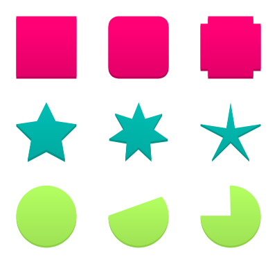
Rectangles (R)
To create a rectangle:
- Activate the Rectangle tool by pressing R, drag on the canvas, and release the mouse button. You can make a perfect square by holding down while dragging.
By default, the rectangle is drawn from the top-left corner to the bottom-right corner, but you can create a rectangle from the center by holding down while dragging.
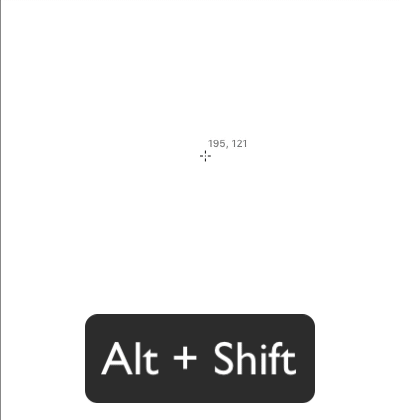
Rectangles have hidden properties, which can be modified with Subselect tool . You can control corners by selecting the rectangle and pressing to activate edit mode, You can modify the corner radius by selecting a red control point and drag it toward the center of the rectangle to round all corners. Alternatively, you can change the radius of the corners in the Appearance section of the Inspector panel by moving Corner slider or by typing a value in the box next to the slider.
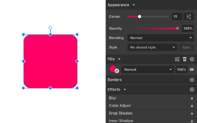
By default, all four corners of the rectangle are use the same radius values, but you can unlock and control them individually. Click the Advanced settings icon next to the radius slider and disable the Uniform Corners check box.
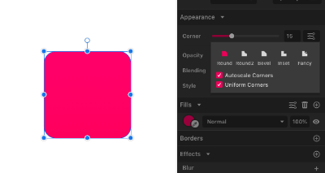
In Advanced settings, you can change how the corners behave when scaling a rectangle. If the Autoscale Corners check box is enabled, corners scale with the shape as it is resized, ideal when creating an illustration or an icon. Autoscale Corners is enabled by default for every new rectangle.
Ellipses (E)
To create an Ellipse:
- Activate the Ellipse tool by pressing E, drag on the canvas, and release the mouse button. You can make a perfect circle by holding down while dragging.
By default, the ellipse is drawn from the top-left corner to the bottom-right corner, but you can create Ellipse from the center by holding down while dragging.
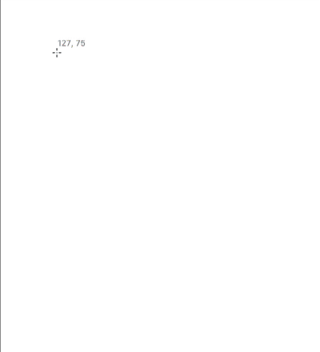
The Ellipse tool lets you to draw fully closed ellipses or circles, as well as truncated ellipses (2), arcs, and pie shapes (3).
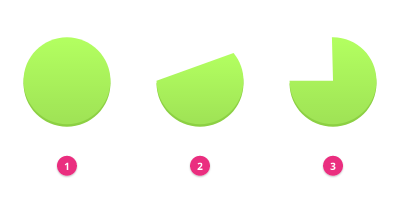
If you press , double-click an ellipse or select a Subselect tool, you see two red control points that allow you to modify the open part of an ellipse contour. Alternatively, you can type values in the Angles boxes in the Inspector panel for more precision.
After the ellipse is open, you can use the Shape buttons in the Inspector panel to choose how the gap behaves. There are 3 options: Open, Closed, and Pie.
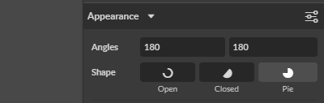
Polygons
To create a polygon click:
Click the Polygon tool in the toolbox, drag on the canvas, and release the mouse button. Hold down to constrain drawing to 15 degrees.
A polygon is always drawn from the center outwards.
By default, Gravit Designer creates 6-sided polygons (hexagon). After you create a polygon, you can change the number of sides in the Inspector panel.
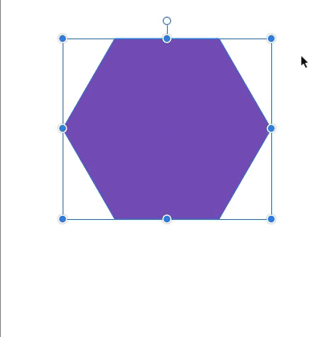
Polygons have hidden anchor points in the center of each side. To see these anchor points you musts be in edit mode — click , double-click an object or use the Subselect tool. You can move these points with the Subselect tool to modify the shape. Hold down to keep symmetrical alignment.
You can modify polygons in the Inspector panel:
- You can change the number of polygon sides using the Points slider, which offers values from 3 (triangle) to 25. If you need more sides, you can type any number in the box next to the slider.
- You can change the radius of the corners with the Corner slider, If hidden side anchor points are moved off the straight edge, they will also be affected by the corner settings. The corner is inverted.
In the Advanced Settings panel, you can use the controls that let you customize polygons.
When you disable the Plain Edges check box, the Size slider appears, which adjusts the middle side points in and out from the center of the polygon. This is the same as dragging on a hidden point with held down. This allows you to make star-like shapes.
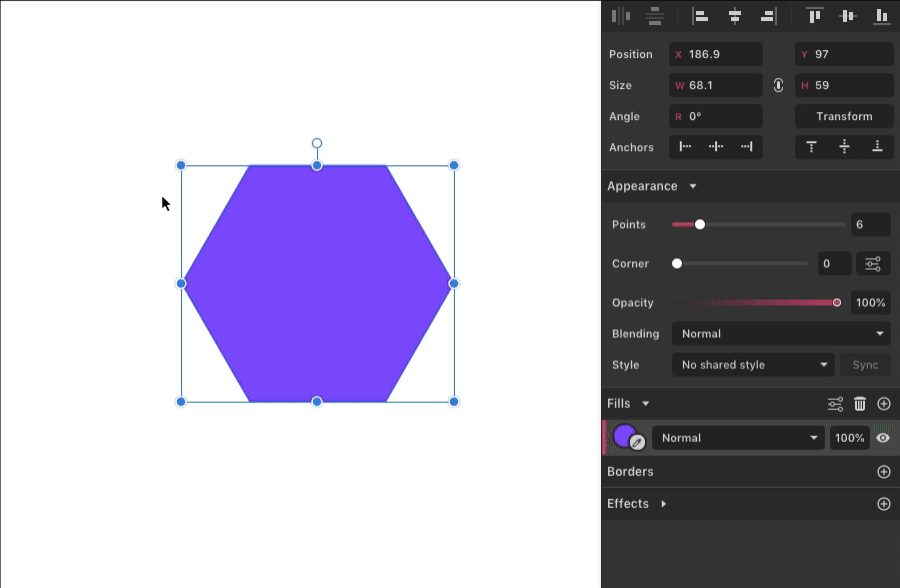
Triangles and stars
These are presets of the Polygon tool. They have the same controls as polygons and allow you to create a triangle or star instantly.
Advanced corner settings
Advanced corner settings can be used with rectangles, polygons (including triangles and stars), and on any straight point on a path.
By default, the Corner slider for these objects controls corner roundness. However, if you click the Advanced Settings icon beside the Corner slider, you can access more corner options:
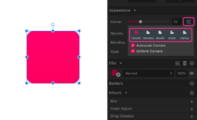
Round: default
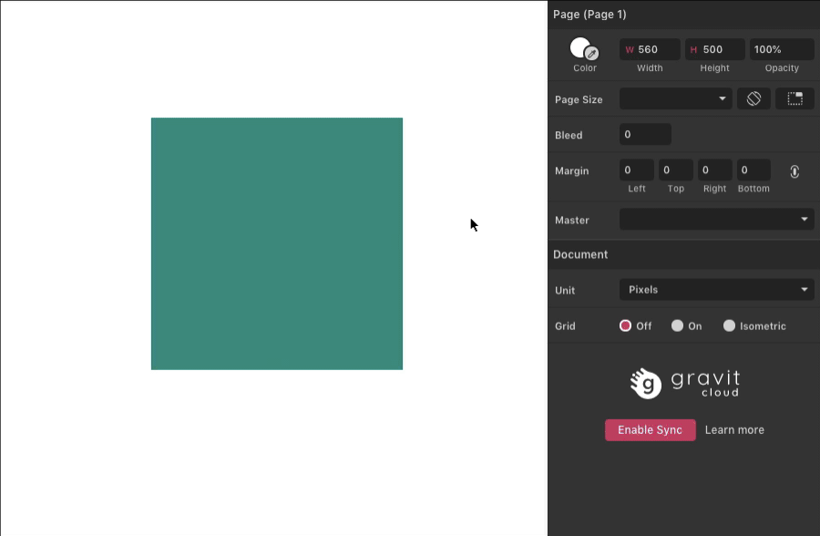
Round2: curved indent
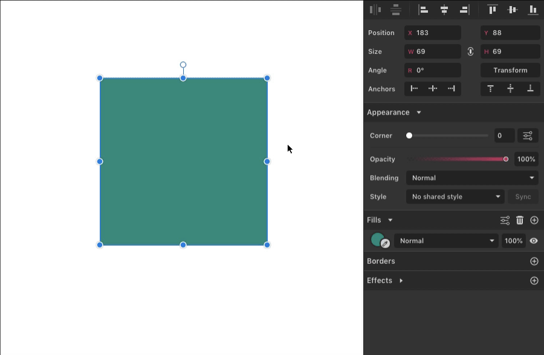
Bevel: corner points truncated (cut off, or beveled)
Inset: angled indent
Fancy: angular loop at each corner
Paths and preset shapes with sharp corners have an option for Autoscale Corners. When you scale these shapes, you can change how corners behave. If Autoscale Corners is enabled, corners scale with the shape when it is resized; otherwise corners stay the same even if you change the size of the shape. Autoscale Corners is enabled by default.
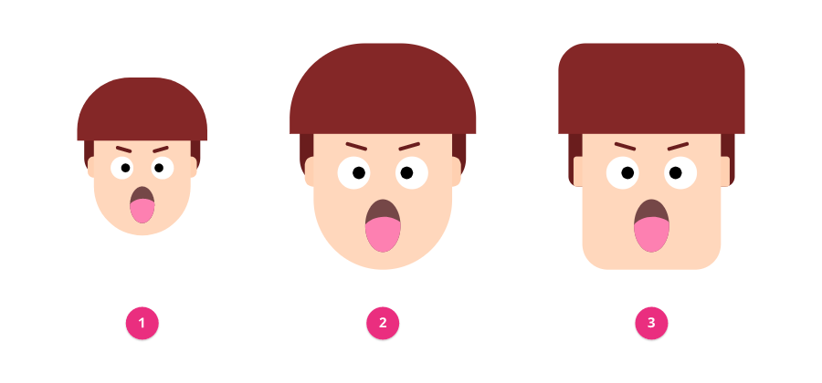
- Original object
- Resized, using rectangles with rounded corners and Autoscale Corners on (the default) for the hair and face
- Resized, rectangles with Autoscale Corners off
Lines
Line segment are opens paths that can be straight or curved. In Gravit Designer, you can create a line with several tools: Line tool , Path tool , Bezigon tool , and Freehand tool.
Line tool (L)
To draw a line:
- Activate the Line tool by pressing , and drag on the canvas.
- You’ll see a preview of a line. Release the mouse button.
If you hold down while dragging, the line is symmetrically drawn from the center. If you want to constrain the line in 45-degree variations (vertical, horizontal, or at 45 degrees), hold down while drawing.